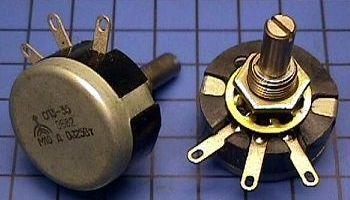
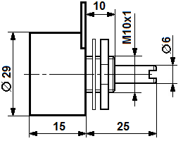

Резисторы переменные СП3-35
Резисторы СП3-35 - переменные регулировочные цилиндрические однооборотные. Предназначены для работы в электрических цепях постоянного и переменного тока. Перемещение подвижной системы - круговое. Способ монтажа - навесной. Резисторы имеют повышенную точность функциональной характеристики.


Рис. 1 - Внешний вид и габаритные размеры переменного резистора СП3-35
Таблица 1
| Параметр | Значение |
|---|---|
| Номинальное сопротивление | 100 кОм … 220 кОм |
| Ряды | E6 |
| Функциональая характеристика | В, Д |
| ТКС, 10-6 1/°C | ±1500 |
| Допустимое отклонение от номинала, % | ±10 |
| Уровень собственных шумов, не более мкВ/В | 20 |
| Напряжение шумов перемещения, не более мВ | 47 |
| Температура окружающей среды, °C | -45…+40 (при номинальной нагрузке); -45…+70 (при снижении нагрузки до 0,5Pn) |
| Сопротивление изоляции, не менее МОм | 1000 |
| Относительная влажность воздуха, % | до 98 |
| Пониженное атмосферное давление | до 53329 Па |
| Предельное рабочее напряжение постоянного или переменного тока, В | 165 |
| Износоустойчивость, цикл | 25000 |
| Угол поворота подвижной системы, ° | 250 |
| Масса, г не более | 40 |
| Наработка на отказ, ч | 25000 |
| Срок сохраняемости, лет | 12 |